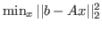
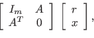
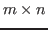
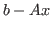
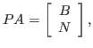
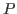
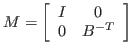
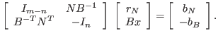
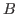

We study the preconditioning of the augmented system formulation of the least squares problem

, viz.

where A is a sparse matrix of order

with full column rank and
. We split the matrix
where
is a permutation matrix, and we use the preconditioner

to symmetrically precondition the system to obtain, after a simple block Gaussian elimination, the reduced symmetric quasi-definite (SQD) system
 |
We discuss the conditioning of the SQD system with some minor extensions to standard eigenanalysis, show the difficulties associated with choosing the basis matrix

, and discuss how sparse direct techniques can be used to choose it. We also comment on the common case where A is an incidence matrix and the basis can be chosen graphically.